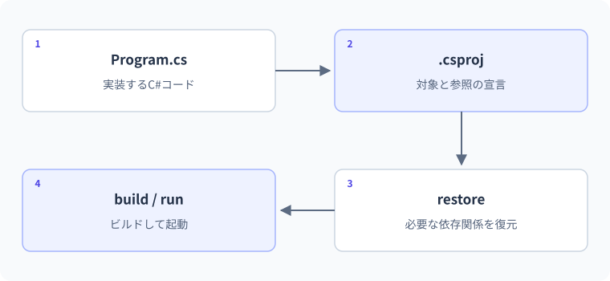

プロジェクトとNuGet
ソース・プロジェクト・依存関係。
Program.csをコピーしただけでは、同じアプリを再現できないことがあります。フォルダー内の役割を確認し、ビルドの材料、参照、依存パッケージの復元を順に見ます。
要点
- .csprojの主要項目を読める
- 依存パッケージとプロジェクト参照を区別する
// .csprojにPackageReferenceやProjectReferenceを宣言ソースとプロジェクト設定をそろえる
実務ではProgram.csだけでなく、.csproj、参照、依存パッケージ、ビルド結果まで含めてアプリを管理します。コマンドを丸暗記せず、どのファイルへ何が記録され、どの段階で失敗したかを切り分けます。
プロジェクトがビルドの単位
SDK形式の.csprojには、TargetFramework、Nullable、ImplicitUsingsなどを記述します。以下のプロジェクト設定はnet10.0、Nullable=enable、ImplicitUsings=enableです。.csファイルは通常、プロジェクトのディレクトリ配下から自動的にコンパイル対象へ含まれます。別の演習のProgram.csを同じプロジェクトへ増やすと入口や型名が衝突するため、例ごとにフォルダーを分けます。
プロジェクトファイルはビルドの契約
.csprojは対象フレームワーク、出力の種類、nullable解析、依存関係などをMSBuildへ伝えます。TargetFrameworkのnet10.0は対象とする.NETのAPI群を示します。OutputType=Exeなら実行可能なアプリ、通常のclasslibなら再利用するライブラリです。ファイル拡張子が.csであることだけでビルド対象や設定が決まるわけではありません。
SDK形式ではプロジェクト配下の.csが既定で含まれるため、一つのフォルダーへ別々のサンプルを大量に置くと、トップレベル文や型名が衝突します。binやobjはビルドで生成される情報であり、通常はソースの正本として編集しません。
プロジェクトに含まれるコードを実行する
Console.WriteLine(".NET学習プロジェクト");
Console.WriteLine(typeof(string).FullName);
Console.WriteLine("標準ライブラリだけで動作します");想定出力
処理順
- Program.csをプロジェクト設定に従ってコンパイルする。
- stringはSystem.Stringの別名なので完全名を確認できる。
- Consoleやstringを使うためだけに追加NuGetは必要ない。
実例：依存パッケージなしの小さなアプリ
まず標準ライブラリだけで日付付きメッセージを作ります。ConsoleプロジェクトのProgram.csに置く例です。
using System.Globalization;
var date = new DateOnly(2026, 1, 1);
string label = date.ToString("yyyy-MM-dd", CultureInfo.InvariantCulture);
Console.WriteLine($"{label}: 集計完了");このコードの図解：ソース・プロジェクト・依存関係

想定出力
2026-01-01: 集計完了処理と値の変化
- TargetFrameworkプロジェクトの対象フレームワークを決める
- System.Globalization標準ライブラリの名前空間を参照する
- DateOnly日付のみを表す型で表示用文字列を作る
標準ライブラリで要件を満たせる場合、外部パッケージを増やす必要はありません。
複数ファイルと参照の関係
パッケージと自分のプロジェクト
NuGetは.NET向けのパッケージ管理です。.NET 10のdotnet package add パッケージ名は外部パッケージを追加します。自分の別プロジェクトへ依存する場合はproject referenceを使います。ソリューションは複数プロジェクトをまとめる単位で、.slnや.slnx形式があります。言語の名前空間と、パッケージやプロジェクトの関係を混同しないでください。
using・プロジェクト参照・パッケージ参照の違い
usingは名前空間の型を短い名前で書くための指定です。まだ利用可能になっていない外部ライブラリをダウンロードする命令ではありません。自分の別プロジェクトを使うならProjectReference、NuGetの配布物を利用するならPackageReferenceなどで依存を追加します。
クラスライブラリを作る練習は、空の作業フォルダーでdotnet new classlib -n Study.Core -f net10.0、dotnet new console -n Study.Cli -f net10.0を実行し、dotnet add Study.Cli/Study.Cli.csproj reference Study.Core/Study.Core.csprojで参照を追加できます。依存方向はCLI→Coreにし、Coreから表示側へ逆参照させないことが設計の出発点です。
名前を省略する仕組みと、別のコードをプロジェクトで使えるようにする仕組みを区別します。
型名を短く書くための名前解決ソース内の記述
自分の別プロジェクトへの参照プロジェクト同士の依存関係
NuGetパッケージへの参照必要なパッケージとバージョン
usingを書いても、参照していないパッケージを自動で取得するわけではありません。型が見つからないときは、名前と参照の両方を調べます。
同名に見えるキーワードと実際の型名
using System.Text.Json;
Console.WriteLine(typeof(int).FullName);
Console.WriteLine(typeof(string).FullName);
Console.WriteLine(typeof(JsonSerializer).FullName);
Console.WriteLine(Environment.Version.Major);出力
| 段階 | 値・状態 | 読み解き |
|---|---|---|
| .csproj | TargetFramework=net10.0 | この出力例は.NET10ランタイムでの実行を前提 |
| int | System.Int32 | C#キーワードは.NETの型の別名 |
| using System.Text.Json | 型名を短く書ける | usingがNuGetを取得したわけではない |
| Environment.Version | 実行中ランタイムのメジャー | インストール済みSDK一覧とは別の情報 |
パッケージ復元と環境差を調べる
再現できる状態を残す
ソース、設定、必要な依存定義をGitで管理し、bin/objは通常除外します。外部パッケージは公式情報・ライセンス・更新状況を確認し、不要なものは追加しません。新しいパッケージを入れるたび、標準ライブラリで足りない理由を説明できると、保守負担を抑えられます。
restore・build・run・publishを分ける
restoreは依存パッケージを解決してビルドに必要な情報を用意します。buildはコードと設定をコンパイルし、runは対象アプリを実行します。publishは配布・配置用の出力を作る操作です。buildやrunが必要に応じてrestoreを暗黙に行う場合もあるため、毎回すべてを手動実行する必要があるという意味ではありません。
失敗したら段階を読みます。NuGet接続失敗はネットワークやソース設定、名前解決失敗は参照や名前空間、実行時のFileNotFoundはファイル配置など、調べる箇所が異なります。再インストールを繰り返す前に、最初のエラーメッセージ、対象プロジェクト、実行コマンド、SDKの情報を記録してください。
dotnet run一つで進む場面でも、内部では異なる役割の工程があります。
- 1restore
必要な依存パッケージをそろえる - 2build
コードと設定から実行用の成果物を作る - 3run
アプリを実行する - 4publish
配布先で使う成果物をまとめる
通常のbuildやrunは必要な復元などを暗黙に行うことがあります。失敗時には、どの工程で止まったかをログで区別すると原因を探しやすくなります。
依存追加を再現可能にする
NuGetへ依存すると、そのパッケージがさらに他のパッケージへ依存することがあります。直接依存と推移的依存を確認し、不要なパッケージを増やさないようにします。標準ライブラリにSystem.Text.Jsonがある今回のJSON学習では、それを使うためだけに別のJSONライブラリを追加する必要はありません。
.NET10ではdotnet package add <PACKAGE_NAME>という名詞を先に置く形式が利用できます。具体的なパッケージを追加するときは用途・対象TFM・公式の対応状況を確認し、選んだバージョンをプロジェクトへ記録します。global.jsonによるSDK選択とNuGetのロックファイルは別の再現性の仕組みです。バージョン指定をlatestという可変状態だけに頼らず、更新時に差分とテストを確認します。
自分のPCで偶然動くことと、他の人が必要な材料から再現できることを分けます。
- 1材料を共有
ソースと.csproj - 2環境をそろえる
対象のSDKと設定 - 3依存を復元
指定されたパッケージ - 4確認
ビルドとテストを実行
生成物だけでなく、ソース・プロジェクト設定・必要なSDK・依存関係を管理します。バージョン固定やロックファイルの使い方はプロジェクトの運用方針に合わせます。
C#仕様の整理
| 観点 | C#での扱い | 読み方・設計上の要点 |
|---|---|---|
| ビルド設定 | .csproj/MSBuild | ツールは違っても依存とビルド条件を記録 |
| 依存取得 | NuGet | usingだけでは取得しない |
| 名前の取り込み | using | プロジェクト参照とは別 |
| 配布 | dotnet publish | ソース編集・ビルド・配置を区別 |
よくある間違いと修正
使う型名と名前空間の関係を見落とす
修正箇所: Program.csの型参照
修正前
Console.WriteLine(JsonSerializer.Serialize(new { score = 80 }));修正後
using System.Text.Json;
Console.WriteLine(JsonSerializer.Serialize(new { score = 80 }));修正後の確認
- {"score":80}を出力
- 完全修飾名System.Text.Json.JsonSerializerでも可
- そもそも別ライブラリが必要な場合は参照も確認
基礎・標準・応用演習
C#実行環境：.NET 10 SDK
基礎演習
新規コンソールプロジェクトを作り、.csprojのTargetFrameworkがnet10.0、Nullableがenableであることを確認してください。その上で型名を表示します。
開始コード
// typeof(int).FullNameを表示する。入力例・前提条件
net10.0の新規コンソールプロジェクト。Nullableをenableとして確認する。
考え方のヒント
コマンドの結果だけでなく、生成された.csprojを開いて要素を読む。
解答例と確認ポイント
Console.WriteLine(typeof(int).FullName);
Console.WriteLine(typeof(decimal).FullName);| 解答で確認する条件 | 確認方法 |
|---|---|
| System.Int32とSystem.Decimalが表示される。 | コードと想定結果を照合 |
| dotnet buildが成功し、binとobjが生成される。 | コードと想定結果を照合 |
処理と結果の読み解き
TargetFrameworkは利用する.NETの対象、Nullableは参照のnull解析などの設定。表示した実行時の型や情報と、SDKの更新番号は同じ種類の情報ではない。
よくある別解と選び方
既存プロジェクトの設定を調べても学べるが、新規ひな形なら余分な変更の影響を減らせる。
よくある間違いと確認箇所
Runtimeの一覧だけでSDKがあると判断しない。対象SDKと正しいプロジェクトでビルドする。
実務例：チームではソースだけでなく、対象フレームワークと設定も共有して再現する。
標準：別クラスを呼ぶ入口を作る
Study.Core名前空間のScoreCalculator.AddをProgramから呼び、30+50を表示します。まず一つのプロジェクトで動かし、その後クラスをclasslibへ移してProjectReferenceを追加してください。
- 名前空間と参照設定は別
- クラスを外部プロジェクトから呼ぶならpublic
- 分割前後で出力を変えない
開始コード
// 標準：別クラスを呼ぶ入口を作る
// 課題とテストケースを読んで、自分で実装してください。
入力例・前提条件
ScoreCalculator.Addへ30と50を渡す。最初は同じプロジェクト、次にclasslibへ移す。
考え方のヒント
名前空間、公開範囲、ProjectReferenceという三つの確認を分ける。
解答例と確認ポイント
Console.WriteLine(Study.Core.ScoreCalculator.Add(30, 50));
namespace Study.Core
{
public static class ScoreCalculator
{
public static int Add(int first, int second) => checked(first + second);
}
}想定出力
- 最初は型の配置だけを理解できる単一Program.csとして確認する。
- 次にScoreCalculatorをStudy.Coreの.csへ移し、CLIから参照する。CLI側に同じ型を重複して残さない。
- 分割は再利用や依存の整理が目的であり、各クラスに一つずつプロジェクトが必要なわけではない。
| 入力 / 条件 | 期待結果 |
|---|---|
| 30+50 | 80 |
| 0+0 | 0 |
| int.MaxValue+1 | OverflowException |
処理と結果の読み解き
同一プロジェクトで80を返すことを確認後、型を別プロジェクトへ移し、参照を追加する。コードの呼び出しと依存の記録は別である。
よくある別解と選び方
完全修飾名で呼んでもusingを使ってもよい。どちらも参照追加を代替しない。
よくある間違いと確認箇所
クラスを移した後に元の定義を残すと型の重複や意図しない参照が起こる。どこが正本かを一つにする。
実務例：ライブラリの分割で、公開する型とビルドの依存関係を明示する。
応用：例外の種類で失敗段階を説明する
意図的な形式エラーを捕捉して型名を表示するプログラムを作り、この失敗がrestoreでもbuildでもなく実行時である理由を説明してください。
- int.Parseは文字列を実行時に変換
- 構文は正しい
- catch対象をFormatExceptionにする
開始コード
// 応用：例外の種類で失敗段階を説明する
// 課題とテストケースを読んで、自分で実装してください。
入力例・前提条件
形式が不正な文字列をParseし、FormatExceptionの型名を表示する。
考え方のヒント
restore、build、runのどの段階で値が解析されるか説明する。
解答例と確認ポイント
try
{
Console.WriteLine(int.Parse("abc"));
}
catch (FormatException ex)
{
Console.WriteLine(ex.GetType().Name);
}想定出力
- C#コードとしては合法なので、入力値の意味の問題は実行時に発生する。
- 外部入力を通常処理として扱うならTryParseが適する。このコードは失敗段階の観察用である。
- 環境依存の例外メッセージではなく型名を表示し、検証結果を安定させる。
| 入力 / 条件 | 期待結果 |
|---|---|
| abc | FormatException |
| 123へ変更 | 123 |
| 非常に大きな整数文字列 | OverflowException。今回のcatchとは別 |
処理と結果の読み解き
Parse呼び出しの型は正しいのでコンパイルできても、実行時の文字列が数値でないため失敗する。例外の型名を確認し、段階を区別する。
よくある別解と選び方
TryParseで通常の入力ミスとして扱うのは修正方針の一つ。今回は例外が起きる時点を観察する。
よくある間違いと確認箇所
パッケージの復元を繰り返しても不正文字列の意味は変わらない。失敗した層に合う調査をする。
実務例：環境・ビルド・実行・業務結果の問題を切り分けると調査を効率化できる。
確認問題
理解チェックと公式資料
- .csprojの主要設定を説明できる
- usingと参照を区別できる
- restoreと実行時のエラーを分けられる
- 依存バージョンを設定へ記録できる
公式一次情報
公式資料
確認日：2026年9月14日。本文の理解を補うための資料です。学習対象は.NET 10 / C# 14です。パッチ番号は固定しません。